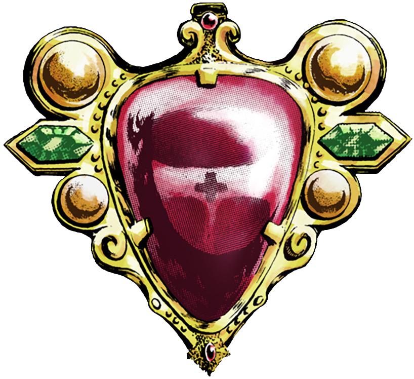
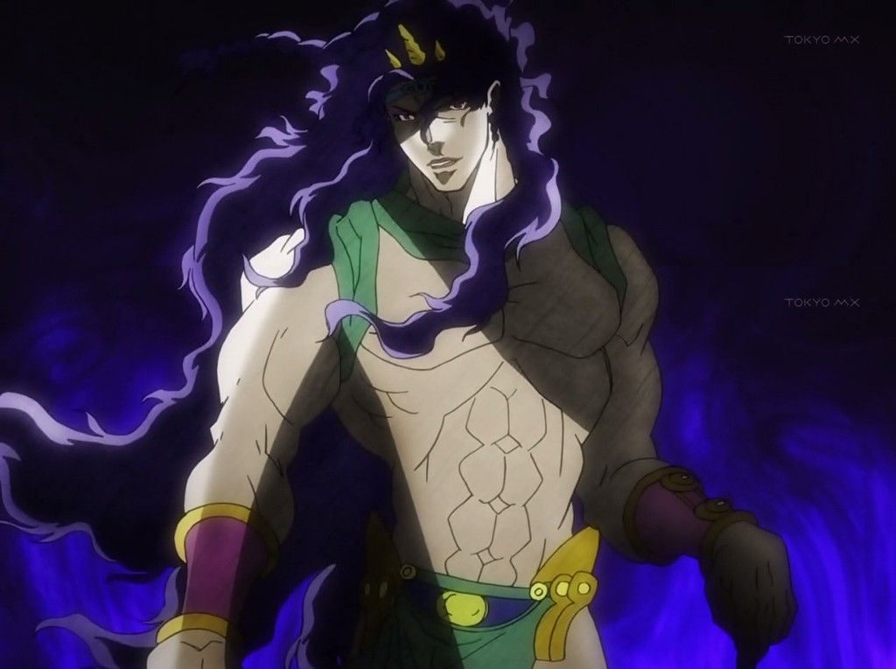

Backstory
Kars, a central antagonist in JoJo's Bizarre Adventure Part 2: Battle Tendency, is the leader of the Pillar Men, an ancient race of superhuman beings. Kars and his fellow Pillar Men, Esidisi, Wamuu, and Santana, have lain dormant for millennia, awaiting the moment when they can reclaim their dominance over the world. Kars, in particular, is driven by a desire to evolve beyond his already formidable abilities and become the ultimate being.To achieve his goal, Kars seeks the legendary Red Stone of Aja, a gemstone said to possess unparalleled power. This stone is crucial in perfecting the Stone Mask, an ancient artifact capable of turning individuals into powerful vampires. However, the Stone Mask's transformation process comes with severe limitations, including vulnerability to sunlight and the need for blood to sustain oneself. Kars believes that with the power of the Red Stone, he can overcome these limitations and become invincible.
His quest for the Red Stone leads him into conflict with Joseph Joestar, the quick-witted and resourceful protagonist of Part 2, as well as the rest of the Joestar family and their allies. Throughout their encounters, Kars demonstrates his intelligence, cunning, and sheer determination to achieve his ambitions. Despite facing numerous setbacks and challenges posed by Joseph and his allies, Kars remains undeterred in his pursuit of power. He employs various tactics and strategies to outmaneuver his opponents, all while inching closer to obtaining the Red Stone.
However, Kars's plans ultimately culminate in a climactic showdown with Joseph Joestar. In a battle filled with twists, turns, and unexpected revelations, Kars's relentless pursuit of power leads to his own downfall. Yet, even in defeat, Kars undergoes a transformation that grants him god-like abilities, making him a nearly unstoppable force. In the end, Kars's hubris proves to be his undoing as he is unable to control his newfound powers. Joseph Joestar manages to lead Kars to a volcano, which erupts and sends Kars flying into the sky, all the way into space. His arrogance leads him to a fate worse than death, as he remains frozen in space. He is ultimately defeated in a spectacular and fitting conclusion to his saga, leaving behind a legacy of ambition, ruthlessness, and the pursuit of ultimate power.

